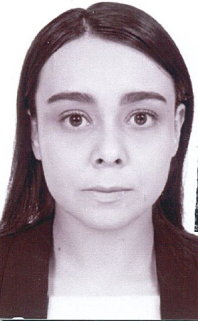

Kelly Darice Del Moral Adame
Maestra en Ingeniería eléctrica-Ciencia de datos
ACERCA DE MI
Soy una ingeniera apasionada por la programación, la visualización 3D y el desarrollo de soluciones prácticas. He trabajado en proyectos de navegación quirúrgica en realidad virtual, donde integro modelos físicos y virtuales utilizando algoritmos matemáticos y herramientas de visualización. Esta área me ha permitido combinar ingeniería, tecnología y aplicaciones médicas de una forma que disfruto mucho.
También tengo experiencia como analista de datos, trabajando con Python, pandas y diferentes técnicas de procesamiento e interpretación de información. La ciencia de datos es un área que me interesa profundamente, especialmente cuando puedo usarla para resolver problemas reales y generar conocimiento útil.
Además, he impartido cursos de programación y tecnologías educativas a jóvenes, lo que me ha permitido fortalecer mis habilidades de comunicación y transmitir ideas complejas de forma clara.Me interesa seguir creciendo en desarrollo de software, ciencia de datos y proyectos tecnológicos que combinen creatividad, análisis y un enfoque humano. Busco siempre mantener un buen equilibrio entre mi vida personal y profesional, mientras continúo aprendiendo y explorando nuevas áreas
HABILIDADES
- Python & análisis de datos
- Ciencia de datos
- Desarrollo en Unity y visualización 3D
- Navegación quirúrgica y alineación de modelos 3D
- Git & GitHub
- Docencia en programación
- Comunicación y trabajo en equipo
- Pensamiento analítico
EXPERIENCIA Y HABILIDADES
Desarrollo de un Esquema de Navegación Quirúrgica en Realidad Virtual
Implementación de un sistema de navegación quirúrgica para integrar modelos 3D de estructuras óseas y herramientas quirúrgicas en un entorno virtual. Uso de Python para algoritmos de alineación SVD y Unity para visualización de nubes de puntos. Proyecto orientado a simulación médica y precisión quirúrgica.
Analista de Datos
Experiencia en análisis de datos utilizando Python y pandas, procesamiento de información y generación de reportes. Interpretación de datos complejos y apoyo en la toma de decisiones basadas en resultados cuantitativos.
Docencia en Programación y Tecnología Educativa
Diseño e impartición de cursos de programación para jóvenes (12–14 años) utilizando App Inventor y simulación de Arduino en Tinkercad. Desarrollo de habilidades de comunicación y facilitación del aprendizaje tecnológico.
EDUCACIÓN
- Maestría en Ingeniería eléctrica - UNAM (2 años)
- Ingeniería Biomédica - UAM (4 años)
- Intercambio Academico (durante la maestria) - Universidad de Pisa, Italia (3 meses)